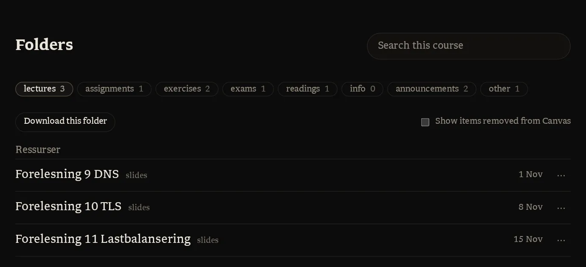
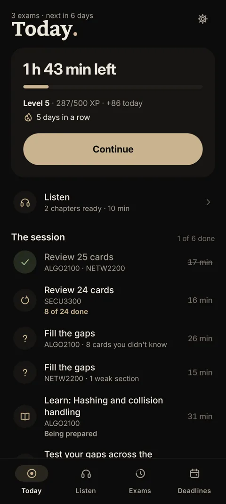
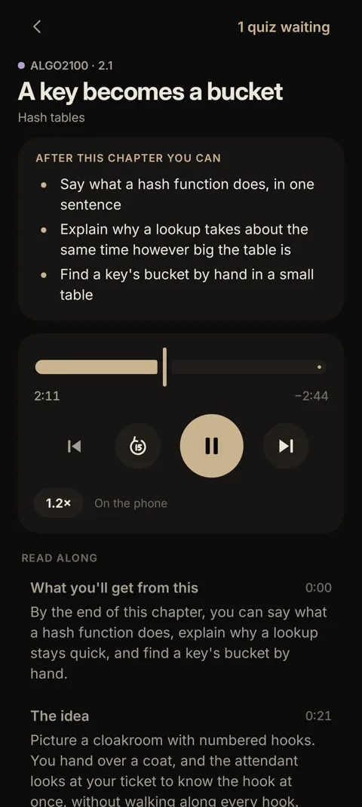
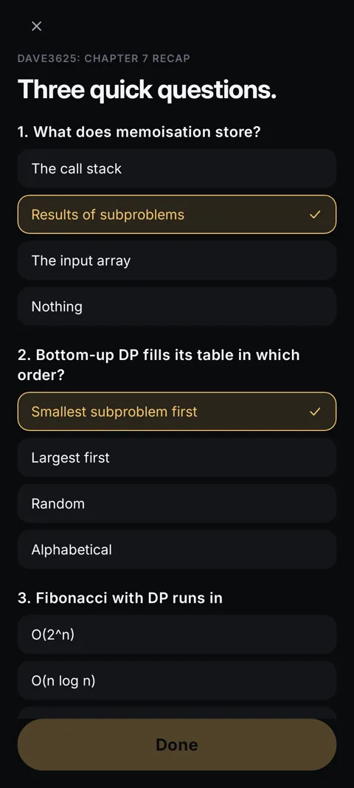

Oslo, Norway · graduating summer 2027
Haakon Meyer Tischbein
Most students graduate with coursework. I will graduate with four apps in production, a server I run myself, and a tested way of building with AI.
Final-year Applied Computer Technology student at OsloMet, looking for a full-time role in DevOps, platform or backend engineering from summer 2027.
What sets me apart
- I run things in production. Four of my own apps live on a server I am responsible for: CI deploys with health checks and rollback, locked-down containers behind a Cloudflare tunnel, backups and intrusion detection.
- I finish things and then use them. stud got me through this autumn's exams, alfred plans my days, pulse coaches my runs, and sjekka is open to anyone.
- I get a lot out of AI without handing it the wheel. I write the brief, decide the architecture with it, set the rules and review what comes back. Here is how.
- I had responsibility before I had a keyboard. Representative for 140 conscripts in the Army Medical Battalion, then night shifts in a dementia unit, where staying calm is the job.
Experience
- 2026
- Volunteer, IT group, Øyafestivalen. Built the festival network on site: switches, antennas and a great deal of cabling.
- 2023 – now
- On-call care assistant, Oslo Municipality. Vinderenhjemmet nursing home, alongside my studies.
- 2023
- Care assistant, Åmot Municipality. Full-time in a dementia unit at Ryslingmoen, mostly night shifts.
- 2019 – 2020
- Norwegian Armed Forces, Army Medical Battalion. Full-time battalion representative for 140 conscripts and operations assistant at command headquarters. Promoted to Leading Private.
- 2017 – 2021
- UCO Kjeller. Assembling and maintaining modular buildings, full-time for six months in 2021 and in school holidays before that.
Education
- 2024 – 2027
- BSc Applied Computer Technology, OsloMet. Data Networks and Cloud Services, Operating Systems, Software Testing, Computer Security, Java programming, Interaction Design.
Skills
- Infrastructure
- Linux, Docker, Nginx, systemd, Cloudflare Tunnel and Access, GitHub Actions, cloud‑init
- Languages
- Python, Java, Kotlin, C#, JavaScript, Bash, SQL
- Frameworks
- FastAPI, Spring Boot, ASP.NET Core, Jetpack Compose, React
- Spoken
- Norwegian, English
Also built
- dotfiles ↗ One Hyprland setup across two machines, with tracked packages and app audio routed into screen shares.
- pi ↗ A headless Raspberry Pi set up with cloud-init: Docker services, a stats API and a watchdog that reboots if the tunnel stays down.
- kolllektiv ↗ Chore rotation for a shared flat. Ran on a tablet taped to the fridge.
live Web app · public
sjekka
Why I built it
I am a student on a tight budget, and I wanted to compare my shopping lists across shops to find out where it is actually cheapest to shop.
Photograph a grocery receipt and it lands in a shared price database, so you can see what things really cost and where.
sjekka.tischbein.dev ↗- Photoof a receipt
- ReadGemini, against a strict schema
- Queueretries, duplicates, unit prices
- Pricesone shared database
- The model's answer has to fit a fixed schema, so a bad read is rejected and retried, never stored.
- Deployed by CI to my own server, with a health check and automatic rollback.
Built with Claude Code. How I work with it
in daily use Web + Android · private
stud
Why I built it
Every lecturer uses Canvas differently, and none of it is organised the same way. I wanted every course in the same shape, without hunting for files and deadlines.
stud fetches everything from my Canvas courses every hour, keeps a copy of the files and sorts it all into the same folders for every course. On top of that it builds one deadline timeline, a daily study session, and short audiobook chapters with a quiz after each.





Screens show the web app and the Android app with made-up demo courses. The real app sits behind Cloudflare Access.
- Canvasevery course, hourly, read-only
- Mirrorfiles kept, hidden ones too
- Sortrules first, Claude for the rest
- Studydaily session, cards, mock exams
- Listenspoken chapters, then a quiz
- Automatic retrieval from Canvas: assignments, modules, files, pages and announcements. It finds files a lecturer tucked away inside modules or page links, and keeps its copy when something is removed.
- Deadlines that only exist as a sentence in an announcement are picked out by Claude and added to the timeline, marked as inferred with the sentence they came from.
- Sorting and syncing carry on with rules alone when Claude is unavailable, and a monthly budget cap stops the spend.
- The same material is served to Claude through a read-only MCP server, and the Android app works offline.
Built with Claude Code. How I work with it
in daily use Android + backend · private
alfred
Why I built it
I wanted less to think about. Deciding what to do next costs energy I would rather spend doing it, so I built something that lets me just get to work on what needs to be done.
A personal boss. Alfred plans my week around exams, work and training, taps me on the shoulder when a block starts, and keeps my news feed locked until the day's work is done.



Screens are rendered from demo data.
- Stateone database
- Rulesplanning as plain code
- LLM jobsintake, briefing, quizzes
- Phonecached plan, its own alarms
- Everything works with the language model switched off. The model improves the wording and reads free text; it never owns the plan.
- The phone answers instantly, online or not: actions are queued with idempotency keys and replayed in order.
- Reads from my other apps (study deadlines from stud, training from pulse) so I organise almost nothing by hand.
Built with Claude Code. How I work with it
in use Android + backend · open source
pulse
Why I built it
I found the official apps less intuitive than they should be, and some of the features I wanted sit behind a paywall. So I built the coach I wanted.
An interval coach for a Polar H10 chest strap. It reads my heart rate live, tells me by voice when I drift out of the target zone, and shows whether I am getting fitter.


Screens are rendered from simulated sessions.
- StrapPolar H10 over Bluetooth
- Enginepure Kotlin, tested on simulated runs
- Coachvoice cues and live screen
- Syncto my server
- The coaching logic is separate from Android, so whole workouts can be replayed in tests without a strap or a phone.
- Handles the dull real-world cases: sensor drop-outs, pauses, a session that must survive the screen being off.
Built with Claude Code. How I work with it
Method
How I build with AI
Most of the code in these apps was written by Claude. What to build, how it is put together, the review standard and the running of it in production are my calls. I think being open about that is more useful than pretending otherwise.
- Brief before code. Every project starts as a written brief. The model asks me questions first; my answers are recorded as decisions.
- Architecture with the last word. The model drafts a design, I push on it, and the structural choices are mine: what is its own app, what runs where, what talks to what.
- Contracts between parts. App and server agree on a documented API, so separate agents can build both sides in parallel.
- Isolated agents, real review. Each agent works in its own clone on a branch. Nothing merges before tests pass in a fresh clone and the risky code has been read.
- Deterministic core. Rules live in ordinary code with tests. Language models get narrow, checked jobs, and the apps keep working without them.
- Production like it matters. CI deploys with health checks and rollback, locked-down containers, backups, spending caps.